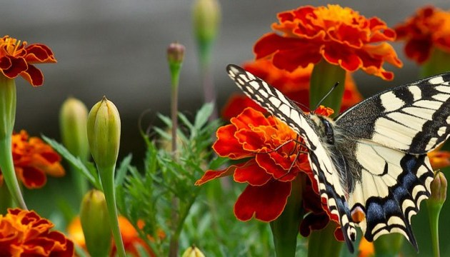

Влітку рослини поглинають найбільша кількість сонячного світла. Це допомагає утворенню нових бруньок, які розкриються в наступному році.
У парках, скверах та лісах трава, кущі і дерева стоять зелені. Багато з рослин квітнуть, на багатьох дозрівають плоди. У червні цвіте липа, розцвітають троянди, маки. Дозрівають вишня, малина, смородина, суниця.
У серпні вдень ще жарко, але ночі вже стають прохолодніше. В кінці літа достигають лісові горіхи, ягоди ожини, брусниці, журавлини. Все ще цвітуть конюшина і ромашка. В кінці серпня дозріває шипшина. Дозріванням плодів, шипшина дає нам знати про наближення осені.
Птахи годують ще безпорадних пташенят, які багато їдять і швидко ростуть. Рябчики, глухарі, тетерева захищають своїх пташенят, годують їх і водять за собою доти, поки вони не стануть самостійними. Каченята, гусенята, курчата відразу ж після появи на світ можуть плавати, бігати й харчуватися самі. Домашні тварини влітку знаходяться на пасовищах, де багато соковитої і м'якою трави. Корови весь час зайняті своїм кормом, але разом з тим, вони уважно спостерігають за поведінкою пастуха.
Якщо пастух спокійний - спокійні і корови, але варто пастуху затурбуватися, почати швидко пересуватися і метушитися, корови теж починають нервувати.
Якщо пастух пройшовся перед стадом - ця лінія стає забороненою для корів, і вони за неї не заходять.
Корови добре розуміють команди і інтонації голосу пастуха, але особливо добре вони запам'ятовують мелодії, які пастух виконує на ріжку перед виходом на пасовище. Почувши знайомі мелодії, корови самі йдуть на звук ріжка.
Влітку на полях і в садах починається збирання врожаю. Поспівають сливи, вишні, яблука, ягоди і овочі.
Влітку люди зайняті заготівлею кормів для домашніх тварин. Одним з таких кормів є силос. Це скошена трава, закладена в спеціальні ями. Ями закривають так, щоб у них не проникало повітря.
